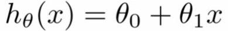
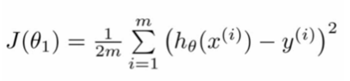
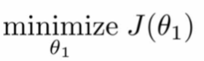
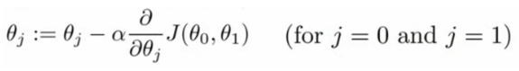
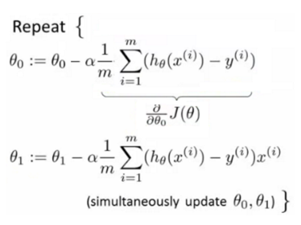

Coursera ML - Week 1
I. Introduction
1. Welcome
(1) Welcome to Machine Learning
2. Introduction
(1) Welcome
(2) Supervised Learning
주어지는 데이터 내에 정답이 들어있다. Regression은 예를 들면 주택 가격과 같은 continuous value의 결과를 예측하는 것이며, Classification은 예를 들면 암이 악성인가 양성인가와 같은 discrete value의 결과를 예측하는 것이다.
(3) Unsupervised Learning
주어지는 데이터 내에 정답이 들어있지 않다. 그러므로 데이터 내에서 특정 structure를 찾는 문제로 귀결되며 이를 Clustering이라 한다. 예를 들어 구글 뉴스에서 뉴스들을 카테고리별로 묶는 것이 예가 될 수 있다.
II. Linear Regression with One Variable
1. Model and Cost Function
Supervised Learning의 한 종류인 Linear Regression에 대해 알아 본다.
(1) Model Representation
Learning algorithm에 training set을 입력하여 출력으로 없게 되는 것을 hypothesis 라고 한다. 이 hypothesis에 test set을 입력하여 결과로 구하게 되는 것이 예측값이 된다. 이를 방정식으로 표현하면 아래와 같다.

(2) Cost Function
우리가 가지고 있는 데이터에 가장 적합한 직선을 어떻게 그려줄 것인가? 직선의 형태는 θ0 과 θ1 의 값에 좌우된다. 그러므로 이 문제는 결국 θ0 의 값과 θ1 의 값을 어떻게 정해줄 것인가로 귀결된다.
가장 쉽게 생각해 볼 수 있는 아이디어는 hθ(x) 의 값이 training example (x,y) 에서의 여러개의 y의 값들과 최대한 가깝게 되도록 θ0 과 θ1 의 값을 설정하는 것이 될 것이다. hθ(x) 와 y 의 값의 차이에 제곱을 해 주는 방식을 Squared Error Function이라고 하는데 우리는 앞으로 이를 Cost Function으로 사용하게 될 것이다.


(3) Cost Function - Intuition I
Hypothesis Function 인 hθ(x) 에서 θ0 = 0 이라고 가정하면 hθ(x) = θ1x 가 된다. Training example이 각각 (1,1), (2,2), (3,3) 이라고 하자. 다양한 θ1 값에 따라 Cost Function을 그려보자. 결국 θ1 = 1 일 때 Cost Function인 J(θ) = 0 으로 최소값을 가짐을 알 수 있다. 이처럼 Cost Function을 최소화하는 θ1 값을 구하는 것이 우리의 목표가 된다.
(4) Cost Function - Intuition II
이번에는 θ0 ≠ 0 인 경우를 생각해 보자. 2개의 θ를 가지기 때문에 3차원 형태의 Cost Function을 가지게 된다. 이를 우리는 등고선 형태로 표현할 수 있는데, 이 경우에도 마찬가지로 Cost Function인 J(θ0 , θ1) 을 최소화하는 θ0 , θ1 을 찾아내는 것이 우리의 목표가 된다.
2. Parameter Learning
(1) Gradient Descent
Gradient Descent는 최저점에 다르기 위한 방식으로, 언덕에 서서 360도 둘러보면서 어떤 방향으로 발을 내딛어야 가장 빨리 내려갈 수 있을 지 생각하는 것을 연상하면 된다. 그리고 그 곳으로 이동한다. 최저점에 다다를 때까지 이를 반복한다. 이를 Gradient Descent Algorithm이라 하며 아래와 같이 수식으로 나타낼 수 있다.

α 는 Learning rate라고 하는데 우리가 산에서 내딛는 발걸음의 크기라고 생각하면 된다.
는 Derivative term이다.
(2) Gradient Descent Intuition
Detivative term 은 해당 지점에서의 기울기이다. 기울기가 + 인 경우에 θj 값은 점차 감소하며, 기울기가 - 인 경우에 θj 값은 점차 증가하게 된다.
Learning rate은 너무 작으면 최저점으로 가는 속도가 느려지게 된다. 반대로 너무 크면 overshooting 하여 convergence에 실패하거나 심지어는 diverge하게 된다.
(3) Gradient Descent for Linear Regression
지금까지 살펴 본 Gradient Descent 를 Linear Regression에 적용해 보자. 미분을 이용해 아래와 같은 식을 도출하게 된다.

(참고)
지금까지 배운 Gradient Descent 는 “Batch” Gradient Descent로 전체 training set을 한꺼번에 처리하는 방식이다. SGD (Stochastic Gradient Descent), Mini-Batch Gradient Descent 등은 나중에 학습하게 된다.
(참고)
Gradient Descent 외에 Normal Equation Method 를 사용하는 방법도 있다.
III. Linear Algebra Review
1. Linear Algebra Review
(1) Matrices and Vectors
Matrix : Rectangular array of numbers (row 수 x column 수)
Vector : n x 1 matrix
(2) Addition & Scalar Multiplication
덧셈 연산은 같은 차원의 매트릭스 간에만 가능하며, 원소 간에 덧셈을 해 주면 된다.
스칼라 곱은 그냥 각각의 원소에 해당 스칼라 값을 곱해 주면 된다.
(3) Matrix Vector Multiplication
(m x n) x (n x 1) = (m x 1)
즉 매트릭스 x 벡터 = 벡터
(4) Matrix Matrix Multiplication
(m x n) x (n x o) = (m x o)
(5) Matrix Multiplication Properties
행렬간에 교환법칙은 성립하지 않으나 결합법칙은 성립한다.
A x B ≠ B x A
A x B x C = (A x B) x C = A x (B x C)
Identity Matrix는 I로 표기한다.
(6) Inverse & Transpose
A의 Inver Matrix는 A-1 라고 표현한다.
AA-1 = A-1A = I
Inverse Matrix를 가지지 않는 행렬을 singular 또는 degenerate라고 한다. (2 x 3) 의 행렬을 transpose 하면 (3 x 2) 가 된다.